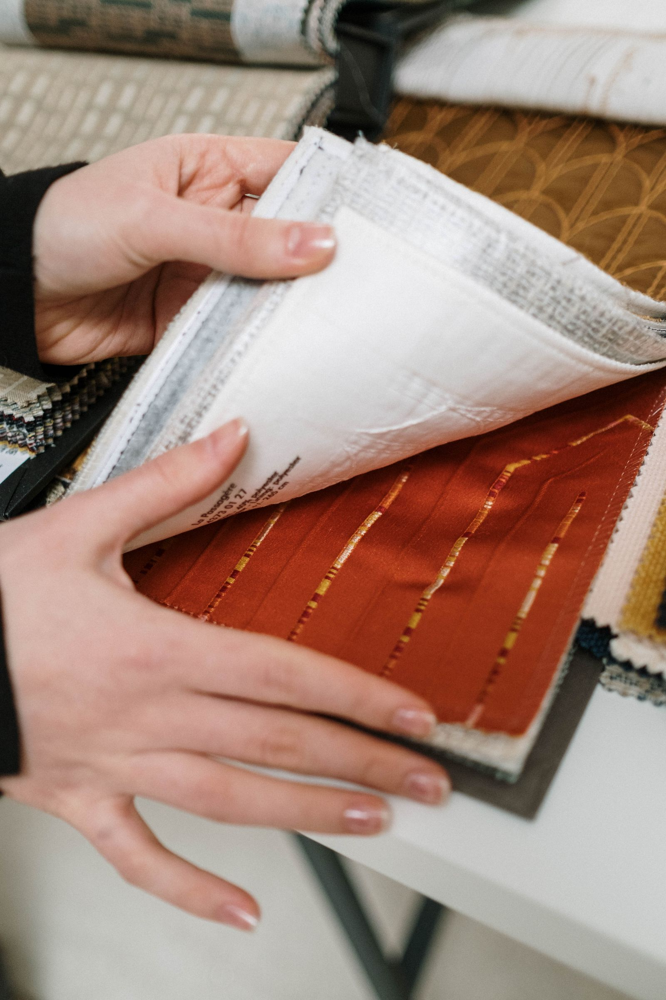
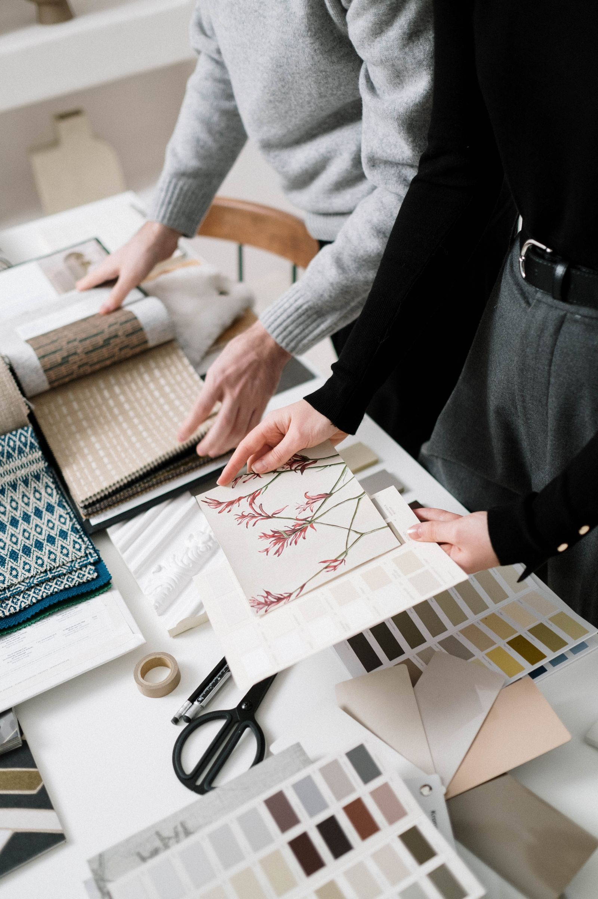
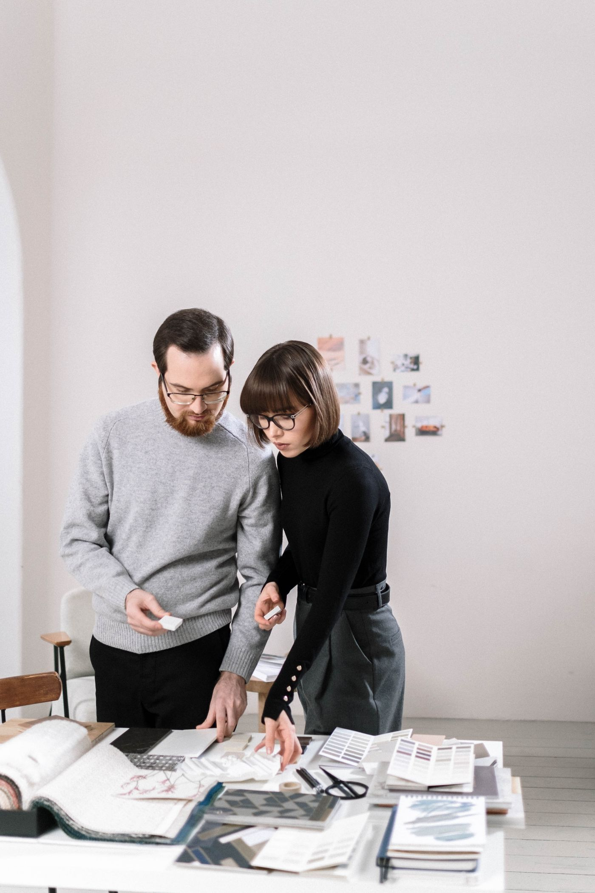
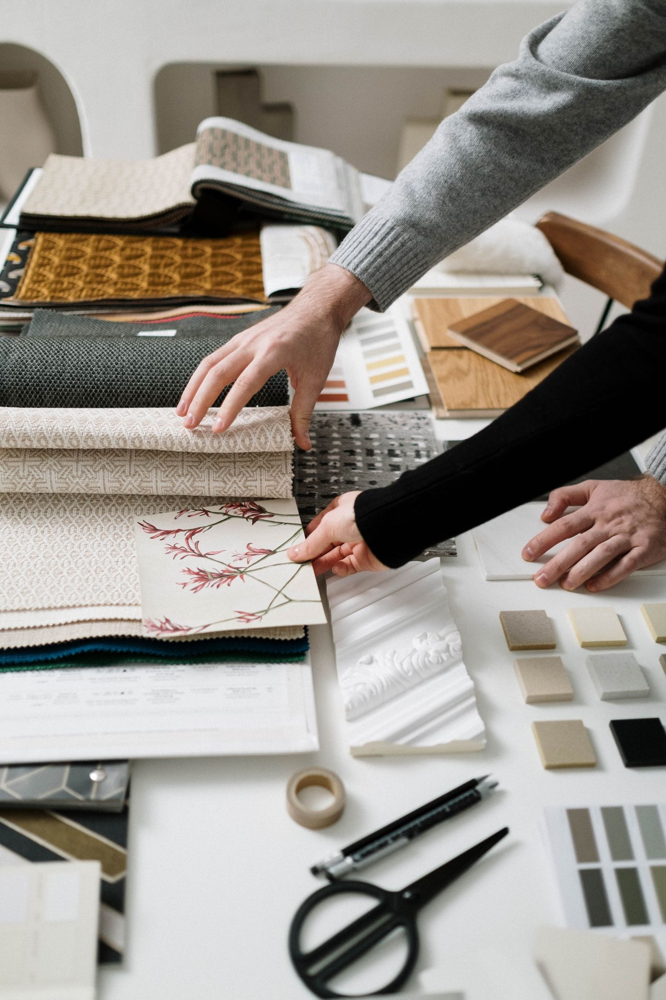

Interiors
End-to-end interior design from concept through installation, for private residential clients.
Details
- About
- Considered interiors for the way people actually live
- Service
- Interiors
- Approach
- Considered material selection
- Highlight
- Concept to completion
- Projects
- 10+
Marlow is appointed by private residential clients, and takes on select hospitality commissions where the brief and client relationship justify the studio's full engagement. Every project begins with a real conversation about how the space is actually used, not just how it should look.
- Full residential interiors, from single rooms to whole-home projects
- Kitchen and bath renovation, coordinated with contractors on your behalf
- Furniture, fixture, and material specification integrated from concept
- Styling and finishing touches once construction is complete
- Ongoing care for repeat clients across multiple properties
Design rooted in place
Every home has a story before we arrive. Our interior work begins with reading that story carefully, then deciding what the space actually needs — more light, less clutter, a material that will age well rather than one that just photographs well.
Detail that defines the experience
The difference between a nice room and a considered one is in the detail. We choose joinery, hardware, and finishes with the same care as the overall layout. How a drawer closes, where a pendant hangs, the grain direction on a counter — these are the things felt every day, long after the big moves are forgotten.
A studio you can speak to
The person who takes the first call is the same person who signs off on the last install. There's no handoff to a junior team once the contract is signed — that continuity protects both the design intent and your time.
How a project unfolds
Our work moves through clear stages: consultation, concept, material selection, and installation. At each stage we present real samples and layouts so decisions are made with full understanding, never under pressure. You always know where the project stands and what it means for cost and timeline.
Sustainability as a starting point
Durable materials and honest construction are designed in from the first sketch, not added at the end. We favor solid wood and natural stone over anything that needs replacing in five years — pieces that are comfortable to live with and inexpensive to maintain.
Working with the wider team
Interior design is a collaborative act. We coordinate with contractors, upholsterers, and specialty tradespeople, and manage that relationship on your behalf. A well-run project is as much about clear communication between everyone involved as it is about the design itself.
- Our
- Clients




Material selection is where a project earns its keep, or falls apart in year two. We choose fabrics and finishes for how they wear, not just how they photograph.

Every board is reviewed in person, against real samples, before anything is ordered. Decisions made from a swatch on a screen are the ones clients end up regretting.
Start a project + →
Our designers lead every project from initial consultation through installation and styling.
Engaged from brief to handover. The person you meet at the first conversation is the person who sees the project through to the end.
Rigorous design, considered detail
Every project begins with a thorough understanding of how you actually live day to day. The outcome is a home that performs practically and feels right for years, not just on the day it's photographed.
Get in touch